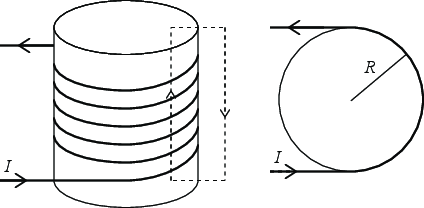
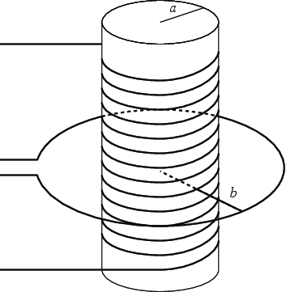

En tett spunnet toroide er en av noe få konfigurasjoner hvor det er enkelt å regne ut selvinduktansen. Hvilke egenskaper ved en solenoide er det som gjør det enkelt?
For den samme magnetiske feltstyrken, \( B \), er energitettheten høyere i vakuum eller i et magnetisk materiale? Forklar? Betyr likningen \( u = (1/2) B H \) at for en long solenoide med strømmen \( I \) så er den lagrede energien proporsjonal med \( 1/\mu \)? Og betyr dette at for den samme strømmen er det mindre energi lagret når solenoiden er fylt med et ferromagnetisk materiale i stedet for luft? Forklar.
Først kobler du en spole til et batteri. Hvor mye energi er det i en spole med induktans \( L \) hvis det går en strøm \( I \) gjennom den? Du kobler hurtig av ledningen til batteriet slik at strømmen blir null. Hvor ble det av energien i spolen?
In this tutorial we will focus on the strategy and procedure used to find the self-inductance \( L \) of a component. The strategy is similar to the strategies we have used to find the resistance and the capacitance of a component. The general strategy is that (1) we assume that a current \( I \) runs through the component, (2) we find the magnetic field \( \vec{B} \) due to this current, (3) we find the flux \( \Phi \) of this magnetic field through the curve \( C \) with the current \( I \), and (4) we find the self-inductance \( L = \Phi / I \).
We will address a long cylindrical solenoid of length \( h \), radius \( R \) and \( N \) turns of the wire.
a) Make a sketch of the solenoid as seen from above and from the side. Mark the direction of the current \( I \) through the solenoid in each of the drawings.

b) Assume that a current \( I \) runs through the wire. Use Amperes law for a well-chosen path to find the magnetic field \( \vec{B} \) inside the solenoid. (You can assume that the magnetic field \( \vec{B} \) is zero outside the solenoid). The field is a vector and should have a magnitude and a direction!
For the path shown in the figure above, Ampere's law gives $$ \begin{equation} \oint_C \vec{B} \cdot d \vec{l} = \mu_i I N \; , \tag{11.1} \end{equation} $$ where we have included \( I N \) as the total current going through the surface enclosed by the path \( C \). Along this path we see from symmetry that \( B \) has the same direction, and is directed along the integration path. It is only the path inside the solenoid that contributes. The integral is therefore \( Bh \), and $$ \begin{equation} Bh = \mu_0 N I \, \Rightarrow \, B = \frac{\mu_0 N I}{h} \; . \tag{11.2} \end{equation} $$
c) Find the flux of the magnetic field \( \vec{B} \) through the loop(s) of the wire. We recall that there are \( N \) loops of the wire, hence the relevant area is \( N \pi R^2 \):
The flux is given as $$ \begin{equation} \Phi = \int_S \vec{B} \cdot d \vec{S} = B \int_S dS = B \pi R^2 \, \Rightarrow \, \frac{mu_0 I \pi R^2 N^2}{h} \; . \tag{11.3} \end{equation} $$
d) Show that the self-inductance is \( L = \frac{\mu_0 \pi R^2 N^2}{h} \).
The self-inductance is then \( L = \Phi/I \). We insert the result from above for \( \Phi \) and find the result.
In this tutorial we will focus on establishing the skills needed to find the mutual inductance of a given system.
A solenoid consists of a wire wrapped \( N \) times around a cylinder of length \( L \) and radius \( a \). A circular circuit of radius \( b \) is centered on the cylinder as illustrated in the figure.

a) First, what strategy would you choose to find the mutual inductance for this system? What symmetries would you use and how would you reason? In which system will you assume there is a current and in which system would you calculate the flux? Explain.
When we calculate the mutual inductance, we first want to find the circuit for which it is most simple to find the magnetic field. In this case, this is the solenoid. For this system, we can use the cylindrical symmetry to find the \( \vec{B} \)-field inside the solenoid. Outside the solenoid the field will be zero. We will therefore assume that there is a current \( I_1 \) in this system.
b) Based on your assumption, assume a current \( I_1 \) runs through your selected circuit 1. What is the magnetic field \( \vec{B}_1 \)? Explain the steps in the argument used to find \( \vec{B}_1 \). How does the argument depend on what is inside the solenoid?
We find the magnetic field by using Ampere's law for a path along the solenoid, first inside, then outside. For this path, the total current will be \( NI_1 \). The field inside will therefore be \( H_1 L = N I_1 \), that is \( H_1 = N I_1/L \) and \( B_1 = \mu H_1 = \mu N I_1/L \). The field outside is zero.
c) Given the magnetic field \( \vec{B}_1 \), what is the flux \( \Phi_{12} \) of \( \vec{B}_1 \) through circuit 2? Explain your reasoning.
The field is constant along the cross section of radius \( a \) and zero outside. Hence the flux is \( \Phi_{12} = B_1 \pi a^2 = \mu N I_1 \pi a^2 / L \).
d) Finally, find the mutual inductance \( L_{12} \) for this system.
\( L_{12} = \Phi_{12}/I_1 = \mu N \pi a^2/L \)
e) Can you extend your argument to the case where \( N=1 \) and \( b\gg a \)?
This corresponds to the case where the field is set up by a very small circuit. However, in this case, we cannot generally assume that the magnetic field is constant inside the circuit, but we may approximate the field with the value at the center of the circuit.
In this tutorial we will focus on developing the skills to find the energy density and to use the energy density to find the total energy in a magnetic system.
A solenoid consists of a wire wrapped \( N \) times around a cylinder of length \( h \) and radius \( a \).
a) What is the magnetic fields \( \vec{H} \) and \( \vec{B} \) inside the solenoid when a current \( I \) is runnding through the wire? (You should go through the complete argument and not simly use a result).
\( \vec{H} = NI/h \hat{z} \), \( \vec{B} = \mu \vec{H} \).
b) What is the energy density inside the solenoid? And outside the solenoid?
\( u = (1/2) \vec{B}\cdot \vec{H} = (1/2) \mu (NI/h)^2 \)
c) What is the total energy stored in the solenoid when a current \( I \) is running through the wire?
\( U = u V = u \pi a^2 h = (1/2) \mu \pi a^2 (NI)^2/h \)
d) Express the total energy in terms of the inductance \( L \) of the solenoid.
We find \( L \) to be \( L = \Phi/I = N\pi a^2 \, \mu N/h \) and that \( U = (1/2) L I^2. \)
e) Explain how you can use a similar approach to find the energy density for a magnetic dipole in the form of a circular current circuit.